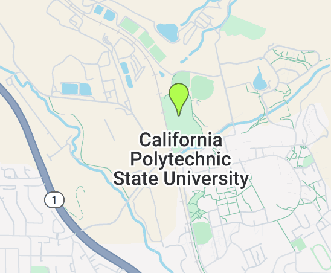

What is Sentinel 2
Sentinel 2 is a mission run by the Copernicus Programme (the EU Space Program’s Earth observation component)
- Multispectral imagery
- Multiple Satellites 180 \(\deg\) out of phase with one another
- 5 day revisit (at equator)
- Wide swath width (290 km)

Image Source: Copernicus
Oil Spill detection
\(OSI = \frac{1}{3} \times \frac{Green + Red}{Blue}\)
Another common combination
\(B3 + B8 + B11\) or \(Green + NIR + SWIR1\)

Image Source: Sentinel Hub
Similarity to Landsat
| Satellite | Spatial resolution | Number of bands | Revisit time |
|---|---|---|---|
| Sentinel-2 (A/B) | 10 m, 20 m, 60 m (band-dependent) | 13 | 5 days (with both satellites) |
| Landsat (8/9 OLI/TIRS) | 30 m multispectral, 15 m panchromatic, 100 m thermal (resampled to 30 m) | 11 | 8 days (with Landsat 8 + 9; 16 days each alone) |

Image Source: Copernicus
{kind=link}
- Let’s try running some code! In the editor window, type the following command:

- Then hit run. Look at the console - what do you see?
Next, we’re going to explore some spatial data.
- In the search bar at the top of page, type in “California Polytechnic State University”
- Click on the search result, and the map view should update accordingly
Add a marker to the map by clicking this icon:

Place the point somewhere in the middle of campus:

- At the top of the code editor, you should now see a new var called “geometry”, which gives us the coordinates of our point
- We can now reference the point in new lines of code, like we did with “largeCities”
We can do the same operation we just did through the plugin: